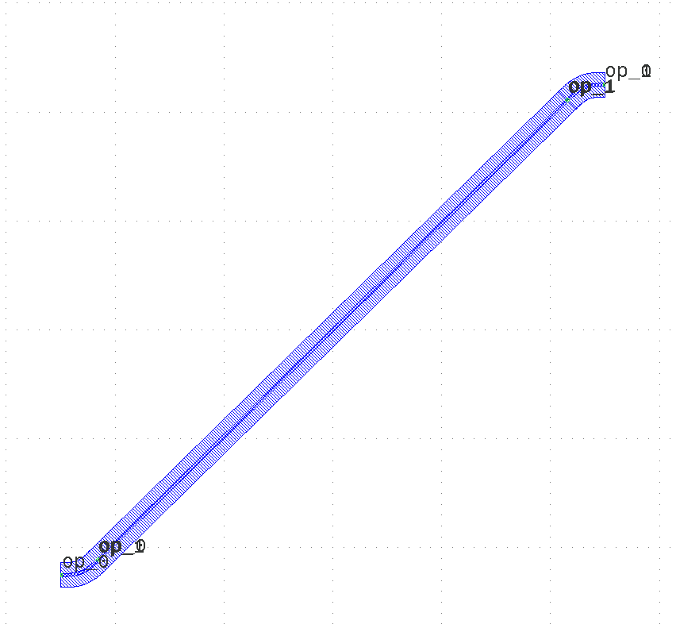

Module gpdk.components.sbend.sbend
Expand source code
import math
from dataclasses import dataclass
from typing import List, Optional, Tuple, cast
from fnpcell import all as fp
from fnpcell.pdk.technology import all as fpt
from gpdk.technology import get_technology
from gpdk.util import all as util
from gpdk.components.straight.straight import StraightBetween
@fp.pcell_class()
@dataclass(eq=False)
class SBend(fp.PCell):
"""
Attributes:
distance: required=False
height: defaults to 10
bend_degrees: required=False,
max_distance: required=False, if final distance is greater than max_distance, then use max_distance as final distance
bend_factory: Optional bend factory
waveguide_type: type of waveguide
port_names: defaults to ["op_0", "op_1"]
Examples:
```python
TECH = get_technology()
sbend = SBend(name="f", distance=100, height=90, waveguide_type=TECH.WG.FWG.C.WIRE)
fp.plot(sbend)
```

"""
distance: Optional[float] = fp.PositiveFloatParam(required=False).as_field()
height: float = fp.FloatParam(default=10, invalid=[0]).as_field()
bend_degrees: Optional[float] = fp.DegreeParam(required=False).as_field()
max_distance: float = fp.PositiveFloatParam(required=False).as_field()
bend_factory: fp.IBendWaveguideFactory = fp.Param(required=False).as_field()
waveguide_type: fp.IWaveguideType = fp.WaveguideTypeParam().as_field()
port_names: fp.IPortOptions = fp.PortOptionsParam(count=2, default=("op_0", "op_1")).as_field()
def _default_bend_degrees(self):
if self.distance is None:
return 45
def _default_waveguide_type(self):
return get_technology().WG.FWG.C.WIRE
def build(self) -> Tuple[fp.InstanceSet, fp.ElementSet, fp.PortSet]:
insts, elems, ports = super().build()
TECH = get_technology()
# fmt: off
distance = self.distance
height = self.height
bend_degrees = self.bend_degrees
max_distance = self.max_distance
bend_factory = self.bend_factory
waveguide_type = self.waveguide_type
port_names = self.port_names
assert distance or bend_degrees is not None, "either distance or bend_degrees must be supplied"
if bend_factory is None:
bend_factory = waveguide_type.bend_factory
reflect = height < 0
height = abs(height)
bend = None
if distance is None:
assert bend_degrees is not None
central_angle = math.radians(bend_degrees)
assert 0 < central_angle < math.pi
bend, _, (_, port_out) = bend_factory(central_angle)
ex, ey = bend[port_out].position
distance = (height - ey * 2) / math.tan(central_angle) + ex * 2
if max_distance is not None and distance > max_distance:
distance = max_distance
bend = None
if bend is None:
central_angle = _get_central_angle(distance=distance, height=height, bend_factory=bend_factory)
bend, _, _ = bend_factory(central_angle)
assert bend is not None
bend = bend.translated(-distance / 2, -height / 2)
start_bend = bend
end_bend = bend.c_mirrored()
if reflect:
start_bend = start_bend.v_mirrored()
end_bend = end_bend.v_mirrored()
insts += start_bend
ports += start_bend["op_0"].with_name(port_names[0])
insts += end_bend
ports += end_bend["op_0"].with_name(port_names[1])
if cast(fp.IPort, bend["op_1"]).waveguide_type != waveguide_type:
buffer:List[fp.ICellRef] = []
t1 = util.links.transition_start(TECH, buffer, start=cast(fp.IPort, start_bend["op_1"]), final_type=waveguide_type)
insts += buffer[0]
buffer = []
t2 = util.links.transition_start(TECH, buffer, start=cast(fp.IPort, end_bend["op_1"]), final_type=waveguide_type)
insts += buffer[0]
straight = StraightBetween(start=t1.position, end=t2.position, waveguide_type=waveguide_type)
else:
straight = StraightBetween(start=start_bend["op_1"].position, end=end_bend["op_1"].position, waveguide_type=waveguide_type)
insts += straight
# fmt: on
return insts, elems, ports
def _get_central_angle(*, distance: float, height: float, bend_factory: fp.IBendWaveguideFactory):
epsilon = fpt.grid_unit() / 20 / fpt.user_unit()
d = distance / 2
h = height / 2
ls = (h ** 2 + d ** 2) / (2 * d)
if height == distance: # Edge case to avoid divergent tangent values
max_angle = math.pi / 2.0
else:
max_angle = math.atan(h / (d - ls))
central_angle = max_angle
while True:
bend, radius_eff, (_, port_out) = bend_factory(central_angle)
ex, ey = bend[port_out].position
line_angle = math.atan2(h - ey, d - ex)
assert line_angle > 0, "radius_min too large"
if fp.is_close(radius_eff * line_angle, radius_eff * central_angle, epsilon=epsilon):
return central_angle
central_angle = (central_angle + line_angle) / 2
def SBendPair(
*,
left_spacing: float,
right_spacing: float,
top_type: fp.IWaveguideType,
bottom_type: fp.IWaveguideType,
top_distance: Optional[float] = None,
bottom_distance: Optional[float] = None,
bend_degrees: Optional[float] = None,
top_bend_factory: Optional[fp.IBendWaveguideFactory] = None,
bottom_bend_factory: Optional[fp.IBendWaveguideFactory] = None,
):
assert top_distance or bend_degrees
assert bottom_distance or bend_degrees
sbend_height = (left_spacing - right_spacing) / 2
dy = sbend_height / 2 + right_spacing / 2
top = SBend(
name="top",
distance=top_distance,
bend_degrees=bend_degrees,
height=-sbend_height,
bend_factory=top_bend_factory or top_type.bend_factory,
waveguide_type=top_type,
transform=fp.translate(0, dy),
)
bottom = SBend(
name="bottom",
distance=bottom_distance,
bend_degrees=bend_degrees,
height=sbend_height,
bend_factory=bottom_bend_factory or bottom_type.bend_factory,
waveguide_type=bottom_type,
transform=fp.translate(0, -dy),
)
return top, bottom
if __name__ == "__main__":
from pathlib import Path
gds_file = Path(__file__).parent / "local" / Path(__file__).with_suffix(".gds").name
library = fp.Library()
TECH = get_technology()
# =============================================================
# fmt: off
from gpdk import all as pdk
def mwg_bend_factory(central_angle: float):
bend = pdk.BendEuler(degrees=math.degrees(central_angle), radius_min=15, l_max=35, waveguide_type=TECH.WG.MWG.C.WIRE)
return bend, bend.raw_curve.radius_eff, ("op_0","op_1")
def swg_bend_factory(central_angle: float):
bend = pdk.BendEuler(degrees=math.degrees(central_angle), radius_min=20, l_max=35, waveguide_type=TECH.WG.SWG.C.WIRE)
return bend, bend.raw_curve.radius_eff, ("op_0", "op_1")
library += SBend()
library += SBend(name="f", distance=100, height=90, waveguide_type=TECH.WG.FWG.C.WIRE)
library += SBend(name="f", distance=100, height=90, bend_factory=mwg_bend_factory, waveguide_type=TECH.WG.MWG.C.WIRE)
library += SBend(name="f", distance=100, height=90, bend_factory=swg_bend_factory, waveguide_type=TECH.WG.SWG.C.WIRE)
library += SBend(name="f", distance=100, height=-90, waveguide_type=TECH.WG.FWG.C.WIRE)
library += SBend(name="f", distance=100, height=-90, waveguide_type=TECH.WG.FWG.C.WIRE, bend_factory=TECH.WG.MWG.C.WIRE.bend_factory)
# fmt: on
# =============================================================
fp.export_gds(library, file=gds_file)
# fp.plot(library)Functions
def SBendPair(*, left_spacing: float, right_spacing: float, top_type: fnpcell.interfaces.IWaveguideType, bottom_type: fnpcell.interfaces.IWaveguideType, top_distance: Optional[float] = None, bottom_distance: Optional[float] = None, bend_degrees: Optional[float] = None, top_bend_factory: Optional[fnpcell.interfaces.IBendWaveguideFactory] = None, bottom_bend_factory: Optional[fnpcell.interfaces.IBendWaveguideFactory] = None)-
Expand source code
def SBendPair( *, left_spacing: float, right_spacing: float, top_type: fp.IWaveguideType, bottom_type: fp.IWaveguideType, top_distance: Optional[float] = None, bottom_distance: Optional[float] = None, bend_degrees: Optional[float] = None, top_bend_factory: Optional[fp.IBendWaveguideFactory] = None, bottom_bend_factory: Optional[fp.IBendWaveguideFactory] = None, ): assert top_distance or bend_degrees assert bottom_distance or bend_degrees sbend_height = (left_spacing - right_spacing) / 2 dy = sbend_height / 2 + right_spacing / 2 top = SBend( name="top", distance=top_distance, bend_degrees=bend_degrees, height=-sbend_height, bend_factory=top_bend_factory or top_type.bend_factory, waveguide_type=top_type, transform=fp.translate(0, dy), ) bottom = SBend( name="bottom", distance=bottom_distance, bend_degrees=bend_degrees, height=sbend_height, bend_factory=bottom_bend_factory or bottom_type.bend_factory, waveguide_type=bottom_type, transform=fp.translate(0, -dy), ) return top, bottom
Classes
class SBend (name: str = None, bands: Optional[FrozenSet[fnpcell.interfaces.IBand]] = None, patches: Tuple[fnpcell.interfaces.IElement, ...] = (), port_names: Sequence[Union[None, str, fnpcell.interfaces.Hidden]] = ('op_0', 'op_1'), transform: fnpcell.transform.Affine2D = None, distance: Optional[float] = None, height: float = 10, bend_degrees: Optional[float] = None, max_distance: float = None, bend_factory: fnpcell.interfaces.IBendWaveguideFactory = None, waveguide_type: fnpcell.interfaces.IWaveguideType = None)-
Attributes
distance- required=False
height- defaults to 10
bend_degrees- required=False,
max_distance- required=False, if final distance is greater than max_distance, then use max_distance as final distance
bend_factory- Optional bend factory
waveguide_type- type of waveguide
port_names- defaults to ["op_0", "op_1"]
Examples:
TECH = get_technology() sbend = SBend(name="f", distance=100, height=90, waveguide_type=TECH.WG.FWG.C.WIRE) fp.plot(sbend)
Expand source code
class SBend(fp.PCell): """ Attributes: distance: required=False height: defaults to 10 bend_degrees: required=False, max_distance: required=False, if final distance is greater than max_distance, then use max_distance as final distance bend_factory: Optional bend factory waveguide_type: type of waveguide port_names: defaults to ["op_0", "op_1"] Examples: ```python TECH = get_technology() sbend = SBend(name="f", distance=100, height=90, waveguide_type=TECH.WG.FWG.C.WIRE) fp.plot(sbend) ```  """ distance: Optional[float] = fp.PositiveFloatParam(required=False).as_field() height: float = fp.FloatParam(default=10, invalid=[0]).as_field() bend_degrees: Optional[float] = fp.DegreeParam(required=False).as_field() max_distance: float = fp.PositiveFloatParam(required=False).as_field() bend_factory: fp.IBendWaveguideFactory = fp.Param(required=False).as_field() waveguide_type: fp.IWaveguideType = fp.WaveguideTypeParam().as_field() port_names: fp.IPortOptions = fp.PortOptionsParam(count=2, default=("op_0", "op_1")).as_field() def _default_bend_degrees(self): if self.distance is None: return 45 def _default_waveguide_type(self): return get_technology().WG.FWG.C.WIRE def build(self) -> Tuple[fp.InstanceSet, fp.ElementSet, fp.PortSet]: insts, elems, ports = super().build() TECH = get_technology() # fmt: off distance = self.distance height = self.height bend_degrees = self.bend_degrees max_distance = self.max_distance bend_factory = self.bend_factory waveguide_type = self.waveguide_type port_names = self.port_names assert distance or bend_degrees is not None, "either distance or bend_degrees must be supplied" if bend_factory is None: bend_factory = waveguide_type.bend_factory reflect = height < 0 height = abs(height) bend = None if distance is None: assert bend_degrees is not None central_angle = math.radians(bend_degrees) assert 0 < central_angle < math.pi bend, _, (_, port_out) = bend_factory(central_angle) ex, ey = bend[port_out].position distance = (height - ey * 2) / math.tan(central_angle) + ex * 2 if max_distance is not None and distance > max_distance: distance = max_distance bend = None if bend is None: central_angle = _get_central_angle(distance=distance, height=height, bend_factory=bend_factory) bend, _, _ = bend_factory(central_angle) assert bend is not None bend = bend.translated(-distance / 2, -height / 2) start_bend = bend end_bend = bend.c_mirrored() if reflect: start_bend = start_bend.v_mirrored() end_bend = end_bend.v_mirrored() insts += start_bend ports += start_bend["op_0"].with_name(port_names[0]) insts += end_bend ports += end_bend["op_0"].with_name(port_names[1]) if cast(fp.IPort, bend["op_1"]).waveguide_type != waveguide_type: buffer:List[fp.ICellRef] = [] t1 = util.links.transition_start(TECH, buffer, start=cast(fp.IPort, start_bend["op_1"]), final_type=waveguide_type) insts += buffer[0] buffer = [] t2 = util.links.transition_start(TECH, buffer, start=cast(fp.IPort, end_bend["op_1"]), final_type=waveguide_type) insts += buffer[0] straight = StraightBetween(start=t1.position, end=t2.position, waveguide_type=waveguide_type) else: straight = StraightBetween(start=start_bend["op_1"].position, end=end_bend["op_1"].position, waveguide_type=waveguide_type) insts += straight # fmt: on return insts, elems, portsAncestors
- fnpcell.pdk.pcell.PCell
- fnpcell.cell.cell_ref.CellRef
- fnpcell.mixin.transform_mixin.TransformMixin
- fnpcell.interfaces.ICellRef
- fnpcell.interfaces.IUpdatable
- fnpcell.interfaces.IElement
- fnpcell.interfaces.IRunnable
- fnpcell.interfaces.IAffineTransformable
Class variables
var bend_degrees : Optional[float]var bend_factory : fnpcell.interfaces.IBendWaveguideFactoryvar distance : Optional[float]var height : floatvar max_distance : floatvar port_names : Sequence[Union[None, str, fnpcell.interfaces.Hidden]]var waveguide_type : fnpcell.interfaces.IWaveguideType
Methods
def build(self) ‑> Tuple[fnpcell.pdk.collection.InstanceSet, fnpcell.pdk.collection.ElementSet, fnpcell.pdk.collection.PortSet]-
Abstract method must be implemented to build a pcell.
Expand source code
def build(self) -> Tuple[fp.InstanceSet, fp.ElementSet, fp.PortSet]: insts, elems, ports = super().build() TECH = get_technology() # fmt: off distance = self.distance height = self.height bend_degrees = self.bend_degrees max_distance = self.max_distance bend_factory = self.bend_factory waveguide_type = self.waveguide_type port_names = self.port_names assert distance or bend_degrees is not None, "either distance or bend_degrees must be supplied" if bend_factory is None: bend_factory = waveguide_type.bend_factory reflect = height < 0 height = abs(height) bend = None if distance is None: assert bend_degrees is not None central_angle = math.radians(bend_degrees) assert 0 < central_angle < math.pi bend, _, (_, port_out) = bend_factory(central_angle) ex, ey = bend[port_out].position distance = (height - ey * 2) / math.tan(central_angle) + ex * 2 if max_distance is not None and distance > max_distance: distance = max_distance bend = None if bend is None: central_angle = _get_central_angle(distance=distance, height=height, bend_factory=bend_factory) bend, _, _ = bend_factory(central_angle) assert bend is not None bend = bend.translated(-distance / 2, -height / 2) start_bend = bend end_bend = bend.c_mirrored() if reflect: start_bend = start_bend.v_mirrored() end_bend = end_bend.v_mirrored() insts += start_bend ports += start_bend["op_0"].with_name(port_names[0]) insts += end_bend ports += end_bend["op_0"].with_name(port_names[1]) if cast(fp.IPort, bend["op_1"]).waveguide_type != waveguide_type: buffer:List[fp.ICellRef] = [] t1 = util.links.transition_start(TECH, buffer, start=cast(fp.IPort, start_bend["op_1"]), final_type=waveguide_type) insts += buffer[0] buffer = [] t2 = util.links.transition_start(TECH, buffer, start=cast(fp.IPort, end_bend["op_1"]), final_type=waveguide_type) insts += buffer[0] straight = StraightBetween(start=t1.position, end=t2.position, waveguide_type=waveguide_type) else: straight = StraightBetween(start=start_bend["op_1"].position, end=end_bend["op_1"].position, waveguide_type=waveguide_type) insts += straight # fmt: on return insts, elems, ports